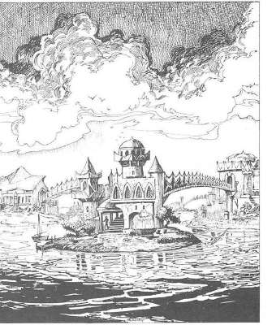

原初世界示例 · Examples
标准 AD&D 战役可以视为 PF、MF、TF 均为 0 的原初世界。地下城主可以把 PF 设为 1–2，让飞行、体型和火焰略有变化；把 MF 设为 4–5，让高等级魔法普遍存在；把 TF 设为正值或负值，让一次位面旅程改变战役年代。异世界冒险的关键不是把每项规则都改写，而是给玩家一个明确、可预测的异质环境。

上一节：在其他原初世界生存 · Survival in Alternate Primes
下一节：附录 II：内层位面生物 · Appendix II: Creatures of the Inner Planes